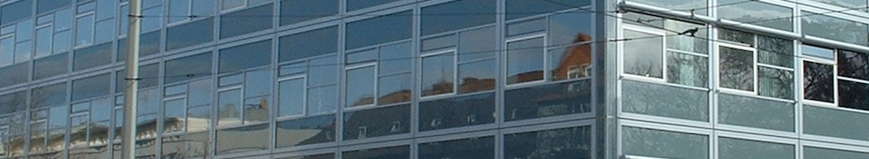

Dokumentation des Praktikums Computernetze Administration
Vergabe der IP-AdressenEditieren der /etc/network/interfaces.d/
IPv4-NetzübersichtNetz Hauptbüro:
10.7.106.0/26 // Netzadresse
10.7.106.1 // Cisco Router (raus)
10.7.106.2 // Router1 (Interrouter1)
10.7.106.3-39 // Workstations
10.7.106.40-61 // freie IPs (VPN, Handys, etc)
10.7.106.62 // Webserver www1
10.7.106.63 // Broadcast Netz1
Netz Side
10.7.106.64/28 // Netzadresse
10.7.106.65 // Router2 (Interrouter2)
10.7.106.66-75 // Workstations
10.7.106.76-77 // freie IPs (VPN, Handy, etc)
10.7.106.78 // Webserver www2
10.7.106.79 // Broadcast Netz2
Netz Inter
10.7.106.80/30 // Netzadresse
10.7.106.81 // Router1 (Netz Main)
10.7.106.82 // Router2 (Netz Side)
10.7.106.83 // Broadcast
Freie Adressen
10.7.106.84-127 // Noch freie Adressen
Sonstige Adressen
10.7.6.1 // ISP-Router-Address
10.7.6.2 // Address of Cisco Router outgoing to ISP
Konfiguration Cisco Router über Cisco CLI
IPv6 aktivieren: change to global configuration mode >> Befehl: "ipv6 unicast-routing"
Installation PHPMyAdmin Installation eines Apache Webservers Die Konfiguration des Apache-Webservers geschieht über die Dateien /etc/apache2/apache2.conf sowie über die /etc/apache2/ports.conf. Webseiten werden im Verzeichnis /www/html/ abgelegt.
Seite erstellt am 28.04.2016 von S. Kratou, F. Golze und B. Radtke.